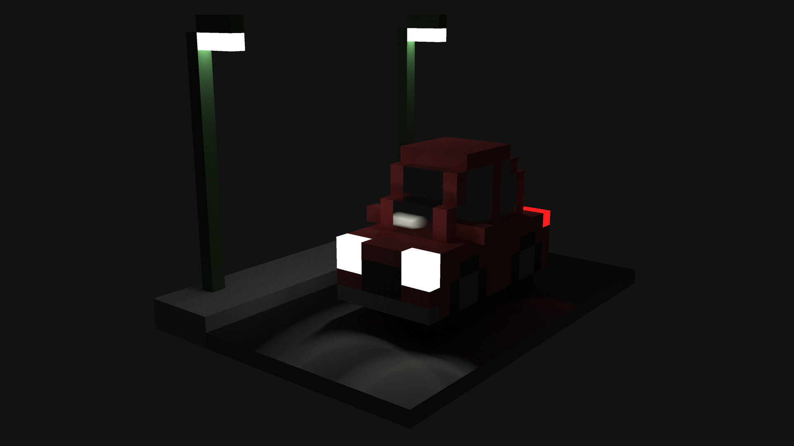

VoxRen

C
OpenCL
Python
Raylib
GUI app
A GPU pathtracer for voxel environments written in C and OpenCL (also some python scripts). It
supports lambert, metal, and light source materials, and I'm currently working on implementing
dielectric (transparent) materials. Very much WIP.
ptmv

Python
console app
A terminal app that can display static images and play videos (both local and from YouTube) by
using the unicode character "▄" as a set of two pixels. All main features have been implemented,
and it can be installed via PIP.
imageToUnicode

C
Python
Single header C library
Python library